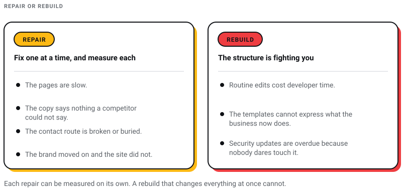

WEB DEVELOPMENT
WEB DEVELOPMENT
AI Website Builders vs Custom Development: Where the Shiny Tools Actually Break
AI website builders are fast, but are they right for your business? Discover where they excel, where they fail, and when custom development is the…

The number that opens most arguments for a redesign is that 38% of users will leave a website that looks like it belongs in the nineties. It is not true, and the thing that disproves it is the chart it usually gets printed alongside. That chart is below. Read its subtitle.
A redesign is one of the more expensive things I can sell you from a studio in Kolkata, so the argument for one should be held to a higher standard than that. Below is the list of warning signs with the honest value of each attached. Several of them are repairs rather than rebuilds, and I have marked those, because a repair is something you can measure afterwards.

Source: GoodFirms
Read the subtitle on that chart. It says Web Design Survey, and GoodFirms describes its own method as a survey of 200-plus web design companies and freelance web designers. So the 38.5% beside “outdated design” is the share of designers who named it as a reason visitors leave. Same for slow loading at 88.5% and bad navigation at 61.5%. Not one figure in that chart is a measurement of a visitor doing anything. Round 38.5 down to 38, call it user behaviour, and a professional opinion has been laundered into a fact. The chart is worth keeping, because what designers believe is worth knowing. The sentence built on top of it is not.
Search engine optimization (SEO) is integral to driving organic traffic to your website. If you have noticed a decline in your search rankings, it might be a sign that your website needs a redesign. There are several ways a redesign can help improve your SEO performance:
Be careful with this one, because it is the sign most often used to sell the wrong thing. A redesign does not fix your keywords. Words fix your keywords, and you can rewrite words on the site you already have. What a redesign fixes is a template that gives you nowhere sensible to put them.
This one is real. A logical structure helps crawlers and readers for the same reason: both are trying to work out what the site is for. If pages have accumulated with no home, that is a structural problem and a rebuild is a legitimate way to fix it.
Not a ranking bonus. An indexing fact: Google reads the mobile rendering of your page, so a layout that breaks on a phone is the version being judged. Sign 3 below has the detail.
Two corrections here, because this is where redesign pitches usually overreach, mine included. There is no single user-experience ranking signal at Google. Page experience is a group of aspects its core systems consider, not a switch somebody flips for you. And bounce rate is not a ranking signal. Google has been saying so for over a decade, and the claim keeps coming back because it is easy to sell and impossible for a client to disprove.
What is real is measurable. Core Web Vitals are published thresholds: Largest Contentful Paint within 2.5 seconds, Interaction to Next Paint at 200 milliseconds or less, Cumulative Layout Shift at 0.1 or less, each assessed at the 75th percentile of real visits. If the audit somebody sent you names First Input Delay, it predates 12 March 2024, when INP replaced FID outright. A rebuild is a sensible moment to fix those numbers, because they are mostly decided by templates, fonts and third-party scripts, which are exactly the things a rebuild replaces.
An outdated website can undermine your credibility and make your brand appear less relevant. Even if your site performs well in terms of SEO and user engagement, an old-fashioned design can deter potential customers. Here’s how a redesign can address this issue:
Chasing trends is how a site ends up needing another redesign in three years. What dates a website is rarely its aesthetic. It is the tells: tap targets built for a mouse, text laid over a busy photograph, a layout that assumes a wide screen.
Colour, type and imagery do carry a judgement about whether you are still trading. Refreshing them is worth doing. It is also the cheapest part of a redesign and the part clients over-weight.
Your website is a reflection of your brand’s identity. If your site looks outdated, it can negatively impact how users perceive your brand. A redesign helps align your website with your brand’s current image and values, enhancing brand perception and trust among your audience.
This one is not a preference any more, it is how you get indexed. Google crawls and indexes with its smartphone agent, so the mobile version of your page is the version it reads. Anything you hid on small screens to keep the layout tidy is content Google does not see. If you build in India you already know why this matters beyond search: the phone is not a secondary device here, it is the device. The layout mechanics are in our responsive web design guide. Here is what a redesign fixes:
A site that only works properly on a desktop is a site that only works for the visitors who happen to be sitting at one.
A responsive layout adapts to the screen instead of asking the reader to pinch and zoom their way around it. That is the whole benefit, and it is enough.
Worth being precise about the mechanism, because the usual version of this sentence is wrong. Google does not hand out a bonus for being mobile-friendly. It indexes the mobile rendering of your page, so a page that breaks on a phone is a page Google reads broken. The ranking effect is a consequence of that, not a separate prize you win.
Open your three closest competitors on your own phone before you commission anything. It is the cheapest audit available and it usually settles the argument.
Speed is the only sign on this list with published numbers attached, which makes it the one worth being precise about. The three-second rule is not a rule. It comes from a Google post of 8 September 2016 reporting that 53% of visits are likely to be abandoned if pages take longer than three seconds, drawn from opt-in analytics benchmark data across roughly 3,700 mobile sites in March 2016. A decade-old correlation is not a threshold. The published thresholds are the Core Web Vitals above, and they are what an audit should be measured against. Here is how a redesign addresses slow loading:
A slow website can frustrate users and lead to high bounce rates. A redesign allows you to optimize your site’s performance by implementing faster technologies, such as content delivery networks (CDNs), optimized images, and efficient coding practices. Improved performance enhances user satisfaction and retention.
There is one good study here and it deserves naming properly rather than being waved at. Google commissioned 55 and Deloitte to instrument 37 European and American brands across more than 30 million sessions, monitoring mobile load times hourly for thirty days with each site’s existing design left in place. A 0.1 second improvement moved retail conversions by 8.4% and average order value by 9.2%, and travel conversions by 10.1%. Two caveats I would want if I were on your side of the table. The research finished at the end of 2019, so it predates most of the phones your customers hold now. And it measures a change in speed, not a speed: a tenth of a second bought that much on sites that had room to improve, which is not the same as a promise about yours.
Test on the connection your customers have, not the one your office has. A site that feels instant on studio fibre can be unusable on a mid-range phone on mobile data, and that phone is where most of India meets your business.
Keeping your website’s content fresh and relevant is essential for maintaining engagement and optimizing SEO. If updating your site is a cumbersome task, it might be time for a redesign. Here’s how a redesign can streamline the update process:
Modern CMS platforms offer interfaces that make content updates straightforward. If your current one is outdated or difficult to use, a redesign can include migrating to something your team will actually use. The choice matters more than the design does, because it decides what every future edit costs you, and the trade-offs are set out in our comparison of CMS platforms.
The test I use is blunt. Ask the person who publishes your content to change a phone number on three pages while you watch. If they need a developer, the CMS is the problem and no amount of new design will fix it.
What you want is not a drag-and-drop editor. It is a small set of components your team cannot break, so publishing a page does not become a design decision every time.
The cost of a bad CMS is not paid once. It is paid every time somebody puts off an edit because it is easier to leave the page wrong.
This is the sign that gets ignored longest, because an insecure site looks exactly like a secure one until the morning it does not. It is also the sign most likely to be genuinely structural: if nobody dares run the updates because the last one broke the layout, that is not a security problem you can patch, it is a build you have outgrown.
An SSL (Secure Sockets Layer) certificate encrypts the communication between your website and its users, ensuring that sensitive information remains secure. One detail to update, because it is repeated in nearly every agency proposal I see. SSL certificates no longer show a padlock. Chrome replaced it with a “tune” icon in version 117 in September 2023, and the reasoning given is worth repeating to anybody selling security as a trust badge: people read the lock as “this website is trustworthy” when all it ever meant was “this connection is encrypted”. Encryption is table stakes and it is free. It is not evidence that the business behind the site is honest.
Secure logins, a firewall and updates that actually get applied. None of these needs a redesign. They need somebody whose job it is, which is the part most quotes leave out.
Trust is earned by what the site says and who it names, not by security furniture. Encryption stops somebody reading the form in transit. It says nothing about whether the form gets answered.
This is the sign people notice last and feel first. The business changed. It moved upmarket, dropped a service line, started selling to a different buyer, and the website is still describing the company as it was three years ago. Nobody files that as a website problem, because nothing on the site is broken. It is just describing somebody else. If the misalignment runs deeper than the website, the problem is a brand one and the sequence is set out in our branding process and, where it has gone further than that, in the rebranding roadmap. Here is how a redesign helps once the brand itself is settled:
Your website’s visual elements, such as color schemes, typography, and imagery, should be consistent with your brand’s guidelines. An outdated design may not accurately represent your brand’s visual identity. A redesign allows you to update these elements and ensure that your website aligns with your brand’s current image.
The words matter more than the visuals here, and they are the cheaper half to change. If the copy still describes the company you were three years ago, fix that first and see whether the design still looks wrong afterwards.
Recognition comes from repetition across everything a customer sees, not from the website alone. If the site and the deck and the invoice look like three different companies, the site is not the only thing that needs work.
Here is the advice I give people who arrive with this list in hand, and it costs me work. Most websites that feel like they need a redesign need four specific repairs instead. The pages are slow. The copy says nothing a competitor could not say. The contact route is broken or buried. The brand moved on and the site did not. Each of those can be fixed on its own, for a fraction of a rebuild, and you can measure each one separately afterwards, which you cannot do with a redesign that changes everything at once.
A full redesign is the right answer when the structure underneath is fighting you. Routine edits cost developer time. The templates cannot express what the business now does. Security updates are overdue because nobody dares touch the thing. Those are structural problems, and structural problems do not respond to new colours.

If you do rebuild, decide what you are buying before you ask what it costs. The questions worth putting to an agency are in this list of questions to ask before hiring a web design agency, the real numbers for this city are in what web design costs in Kolkata, and the specification to insist on is in the features a website actually needs.
We run Pixel Street from Salt Lake, Kolkata, and design and build for brands including Coca-Cola, ITC and Marico. If you want a straight answer about whether you need a redesign or four repairs, that is the conversation to have before either one starts.
8 min read 9 cited sources Digital Marketing
Author
Khurshid Alam is the founder of Pixel Street, an AI-native design & development studio. Design thinking on weekdays and spreadsheets on weekends.
He writes about growth, design, and AI, mostly because someone has to say the quiet parts out loud.
WEB DEVELOPMENT
AI website builders are fast, but are they right for your business? Discover where they excel, where they fail, and when custom development is the…
 Digital Marketing
Digital Marketing
Learn about AEO vs GEO vs SEO. Discover what changed with AI search, what still matters, and how to optimize for Google AI Overviews, ChatGPT, and…
 Digital Marketing
Digital Marketing
Discover the 5 reasons ChatGPT recommends your competitors instead of your business—and how to improve AI visibility, SEO, GEO, and AEO.
 Digital Marketing
Digital Marketing
Want ChatGPT to recommend your brand? Learn how AI chooses businesses, where citations come from, and practical ways to increase your visibility.